SECOND NATURE TRAIL / NOVEMBER 24, 2026
Arrive somewhere.
Remember the journey.
Actual Safari captures of personal destination history and the new shortcut wheel repair. These are isolated local review events. No visits, supplies, scores or completed trips were assigned for the native checks.
Personal visits
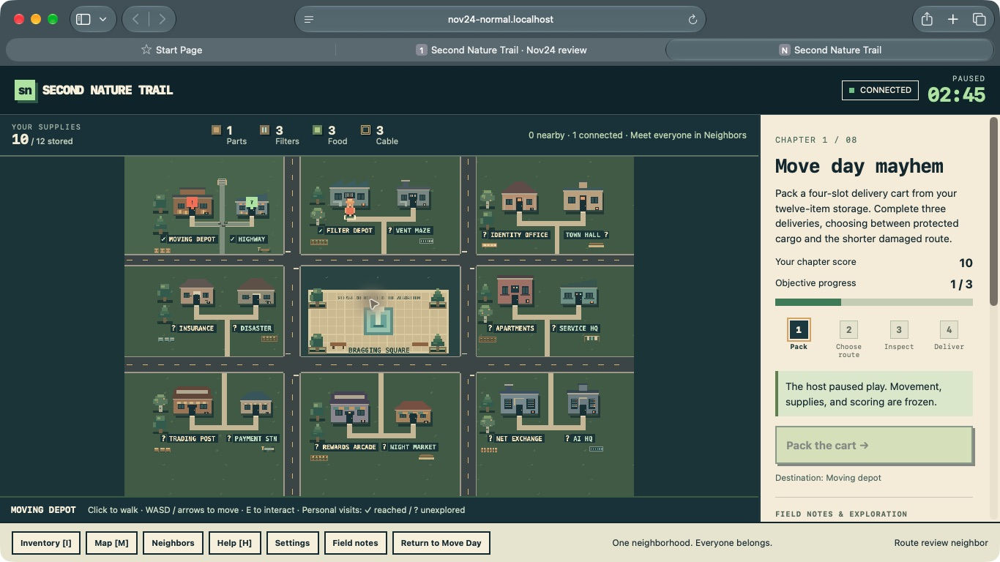
Mixed arrival history · 1366×768
Three destinations reached; other sites remain unexplored. One delivery is complete, so objective progress remains 1/3. Visit badges sit beside the signs, separate from quest markers.
Accessibility snapshot · Open original capture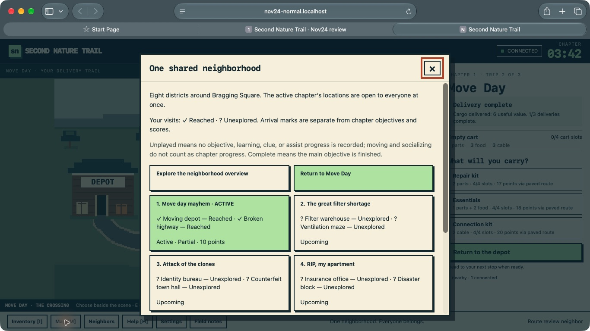
Accessible Map
Full destination names carry Reached/Unexplored text alongside the separate chapter status and score.
Accessibility snapshot · Open original capture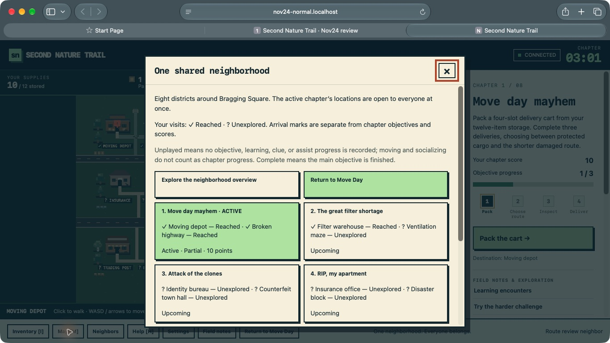
A future destination can be reached
Normal walking to Filter depot records its arrival while that chapter remains Upcoming. Vent Maze remains unexplored.
Accessibility snapshot · Open original capture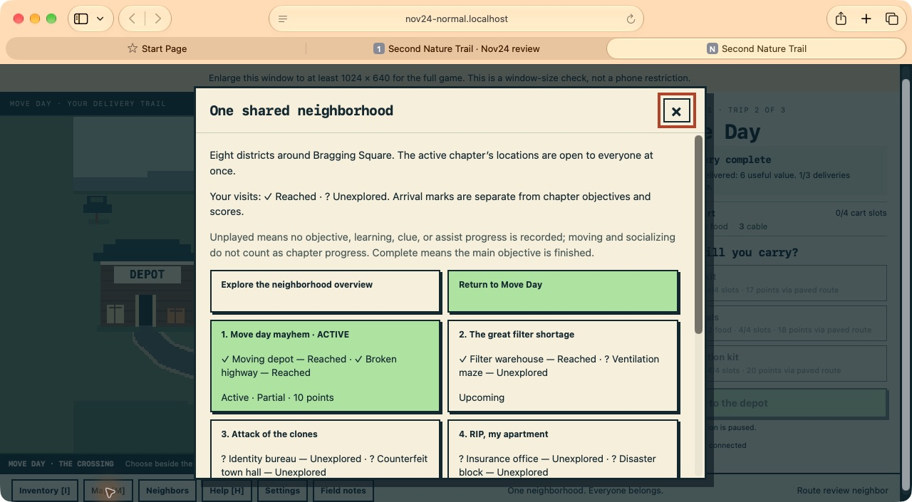
Visit history after restart
Three real arrivals, one completed delivery and 10 points survived graceful server restart and refresh; an independent state comparison confirms exact player equality.
Accessibility snapshot · Open original captureCompact window
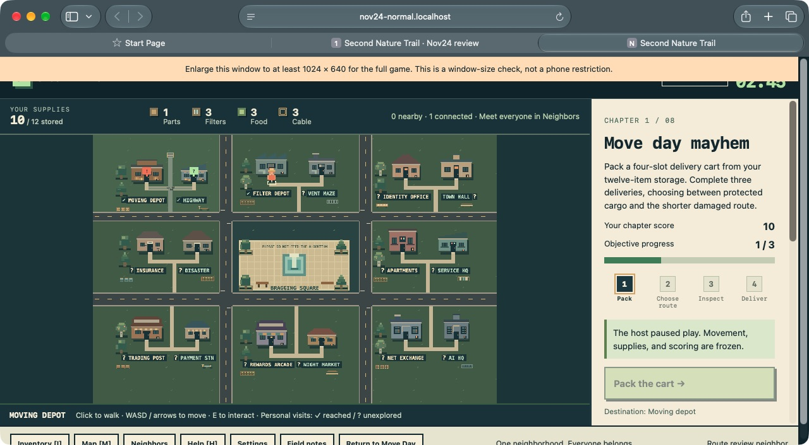
Compact overview · 1280×706
This is the actual small Safari window. Browser content height is below 640px, so the minimum-height warning is expected and shown; this is not claimed as a minimum-supported-viewport pass.
Accessibility snapshot · Open original capture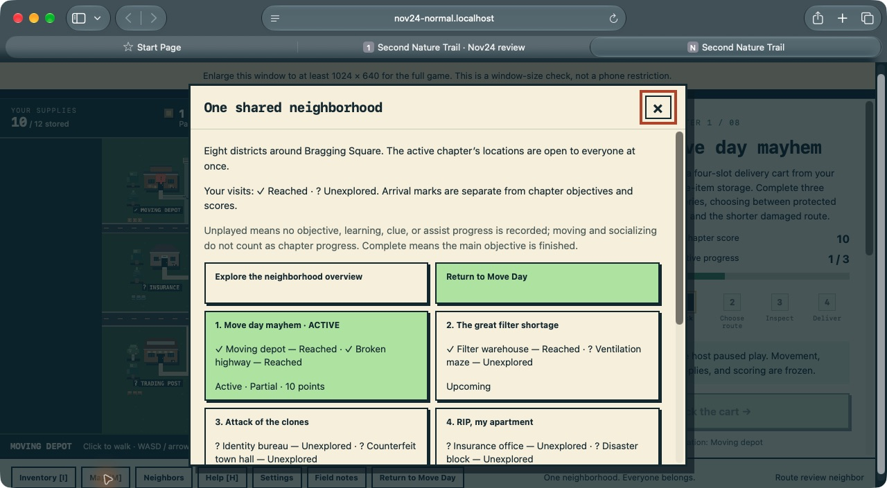
Compact accessible Map · 1280×705
The full names and personal visit states remain available in the Map dialog. The same below-minimum content-height qualification applies.
Accessibility snapshot · Open original captureNormal shortcut and paved detour
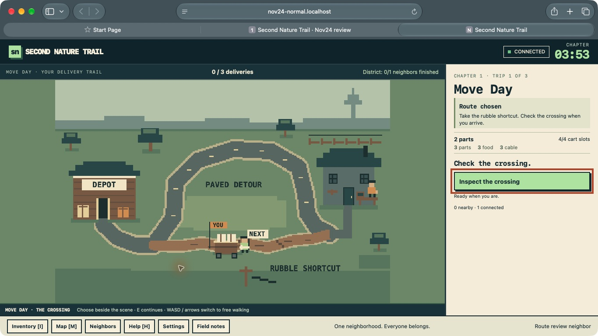
Before the crossing
The route offers its general risk; no future wheel outcome is revealed.
Accessibility snapshot · Open original capture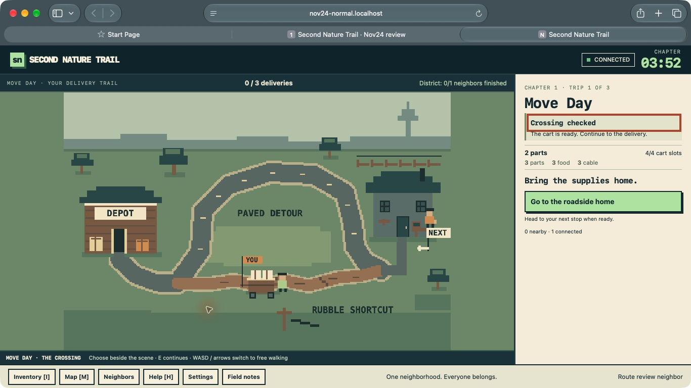
Crossing checked
The accepted crossing has no wheel incident. Continue to the delivery normally.
Accessibility snapshot · Open original captureDelivery complete
A real shortcut repair-parts delivery earns 10 points and 6 useful value. The personal home warms and progress is 1/3.
Accessibility snapshot · Open original capture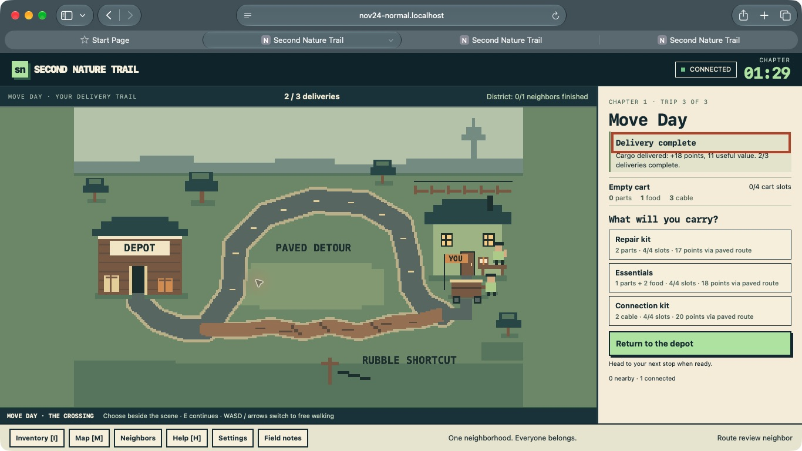
Paved detour · keyboard delivery
Numbers 2 + E selected Essentials; 1 + E chose the paved route. E handled travel, inspection and delivery. This trip earned 18 points and 11 useful value without an incident: cumulative 28 points and 2/3 deliveries.
Accessibility snapshot · Open original captureUnlucky shortcut
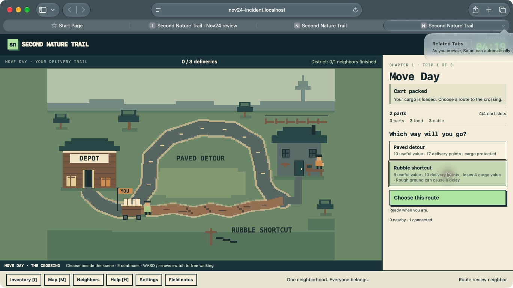
Route selected · outcome still unknown
This developer identity was selected for an unlucky first crossing, but the player view gives no premature incident outcome.
Accessibility snapshot · Open original capture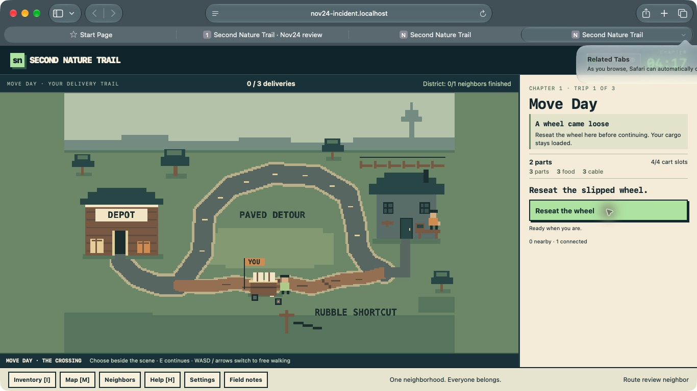
An accepted crossing reveals the setback
The cart wheel is displaced and the journal explains the next action. Cargo stays loaded; no delivery points have been awarded.
Accessibility snapshot · Open original capture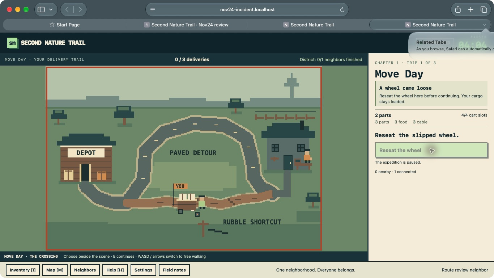
The same incident survives restart
After a second graceful server restart and reload, the paused event retains its broken wheel, saved journal and disabled repair action.
Accessibility snapshot · Open original captureE repairs the wheel
After normal host resume, the native E action reseats the wheel and saves its outcome. Repair adds no points and consumes no extra supplies.
Accessibility snapshot · Open original capturePointer delivery after repair
Go home and Deliver complete the trip: 10 points, 6 useful value, 1/3 progress and a warm personal home. The saved receipt reports the accepted result.
Accessibility snapshot · Open original capture